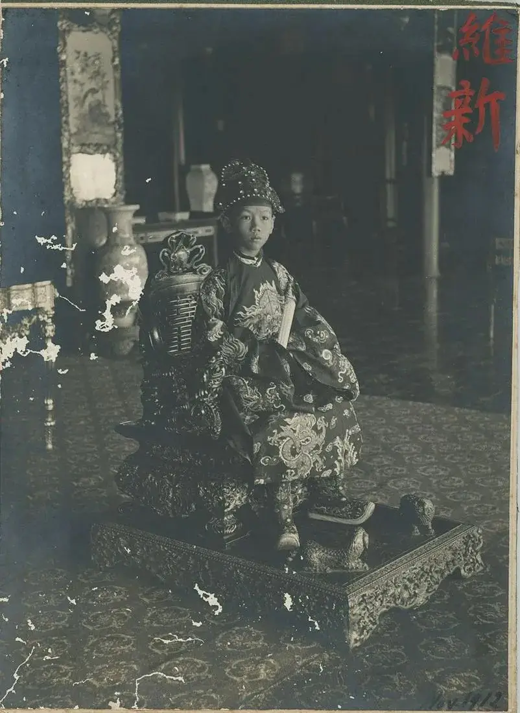
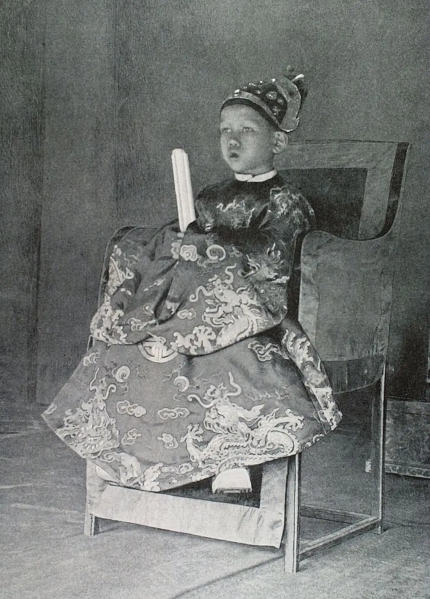

Vua Duy Tân: cậu bé trốn dưới gầm giường, ông vua bỏ ngai vàng
Người Pháp chọn cậu bé Vĩnh San 7 tuổi làm vua vì tưởng cậu dễ sai bảo. Chín năm sau, đêm 2 tháng 5 năm 1916, ông vua 15 tuổi cải trang trốn khỏi Đại Nội để cùng Trần Cao Vân, Thái Phiên khởi nghĩa.

Năm 1907, người Pháp phế vua Thành Thái và đày ông vào Vũng Tàu. Họ cần một ông vua mới, càng nhỏ càng tốt. Người được chọn là Vĩnh San, khi chưa tròn 7 tuổi. Chín năm sau, chính cậu bé ấy cải trang thành thường dân, xuống thuyền ở bến Thương Bạc trong đêm, chờ tiếng súng hiệu lệnh của một cuộc khởi nghĩa.
Con dế dưới gầm giường
Theo chuyện kể lại trong nhiều sách Việt, khi Khâm sứ Lévecque mang danh sách các hoàng tử vào cung để chọn vua, điểm danh thì thiếu Vĩnh San, con thứ 8 của vua Thành Thái. Người ta tìm thấy cậu dưới gầm giường, mặt mũi lem luốc, nói đang tìm con dế vừa xổng. Người lính sợ bị phạt nên đưa thẳng cậu ra trình diện. Người Pháp thấy cậu có vẻ nhút nhát, đồng ý ngay. Đây là chuyện truyền lại, không có biên bản nào ghi.
Điều chắc chắn là ngày 5 tháng 9 năm 1907, Vĩnh San lên ngôi khi chưa tròn 7 tuổi, lấy niên hiệu Duy Tân. Người Pháp lập một hội đồng phụ chính sáu đại thần để điều hành thay vua dưới sự chỉ đạo của Khâm sứ. Cậu bé ấy không chịu làm một ông vua chỉ để ngồi yên.
Ông vua không chịu ngồi yên


Ông vua nhỏ lớn lên và nhận ra một điều: ông được gọi là hoàng đế, nhưng người được nghe lời là Tòa Khâm sứ. Khoảng năm 1912, Khâm sứ Mahé đi tìm vàng trong Đại Nội, đào cả lăng vua Tự Đức. Duy Tân phản đối và cho đóng cửa cung không tiếp ai, đến khi Toàn quyền Sarraut từ Hà Nội phải vào giải quyết.
Năm 15 tuổi, ông đòi các đại thần ký biên bản yêu cầu xét lại Hòa ước Patenôtre năm 1884. Không ai dám ký. Cơ hội đến khi châu Âu có chiến tranh.
Đến 3 giờ sáng vẫn không có tiếng súng nào.
Đêm 2 tháng 5 năm 1916
Ở châu Âu đang có Thế chiến thứ nhất, quân Pháp ở Đông Dương mỏng đi. Việt Nam Quang phục Hội, do Phan Bội Châu lập năm 1912, tìm cách liên lạc với nhà vua. Trần Cao Vân và Thái Phiên đưa người của Hội vào làm tài xế riêng cho vua. Tháng 4 năm 1916, ở bãi tắm Cửa Tùng, vua nhận thư của hai người, rồi gặp họ trong một buổi câu cá ở Hậu hồ. Ông đồng ý. Khởi nghĩa định vào 1 giờ sáng ngày 3 tháng 5.
Cuối tháng 4, tin bị lộ ở Quảng Ngãi. Chiều 2 tháng 5, Khâm sứ cho thu súng của lính người Việt và cấm trại. Đêm đó, không biết kế hoạch đã vỡ, vua Duy Tân cải trang thành thường dân, xuống thuyền ở bến Thương Bạc. Ông chờ ở làng Hà Trung tiếng súng thần công làm hiệu lệnh. Đến 3 giờ sáng vẫn không có tiếng súng nào. Sáng ngày 6 tháng 5, ông bị bắt.
Người Pháp mời ông trở lại ngai vàng. Ông từ chối. Bản án đổ tội cho những người "xúi giục" hoàng thượng còn nhỏ tuổi. Trần Cao Vân, Thái Phiên, Tôn Thất Đề và Nguyễn Quang Siêu bị chém ở An Hòa. Duy Tân bị đày sang đảo Réunion ở Ấn Độ Dương cùng cha.
Từ Réunion đến bầu trời châu Phi
Ở Réunion, ông thuê một căn nhà nhỏ ở Saint-Denis, học vô tuyến điện, mở tiệm sửa radio, đua ngựa và viết báo dưới bút danh Georges Dry. Hồ sơ của Bộ Thuộc địa Pháp, sau này được giải mật, nhận xét ông "có vẻ khó mua chuộc, rất độc lập".
Thế chiến thứ hai giúp ông rời đảo. Ông theo phe Nước Pháp Tự do, làm sĩ quan vô tuyến trên tàu khu trục Léopard, rồi lên dần tới trung tá năm 1945. Cuối năm đó, tướng de Gaulle gặp ông để bàn về việc đưa ông trở lại Việt Nam. Ngày 26 tháng 12 năm 1945, máy bay chở ông rơi ở vùng nay là Cộng hòa Trung Phi. Ông 45 tuổi. Ông chỉ trở về Huế nhiều năm sau, dưới dạng một bộ hài cốt.
Trở về
Năm 1987, hài cốt ông được đưa từ M'Baïki về Huế, an táng ở lăng vua Dục Đức, cạnh cha là vua Thành Thái. Ông không có miếu hiệu. Gần như thành phố nào ở Việt Nam cũng có một con đường mang tên Duy Tân.
Người Pháp chọn ông vì tưởng ông dễ bảo. Không ai biết chắc hôm ấy cậu bé có thật đang tìm con dế hay không, nhưng ai cũng thấy họ đã nhìn nhầm.